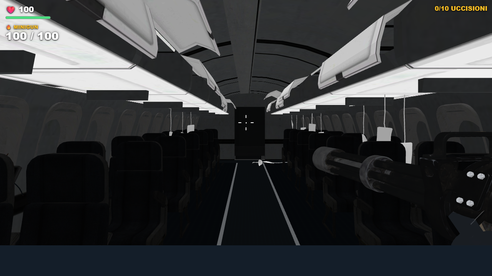
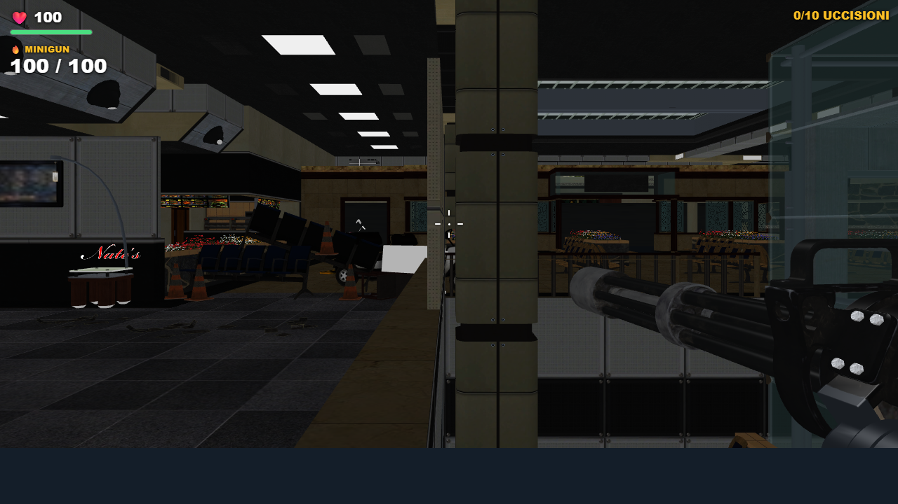
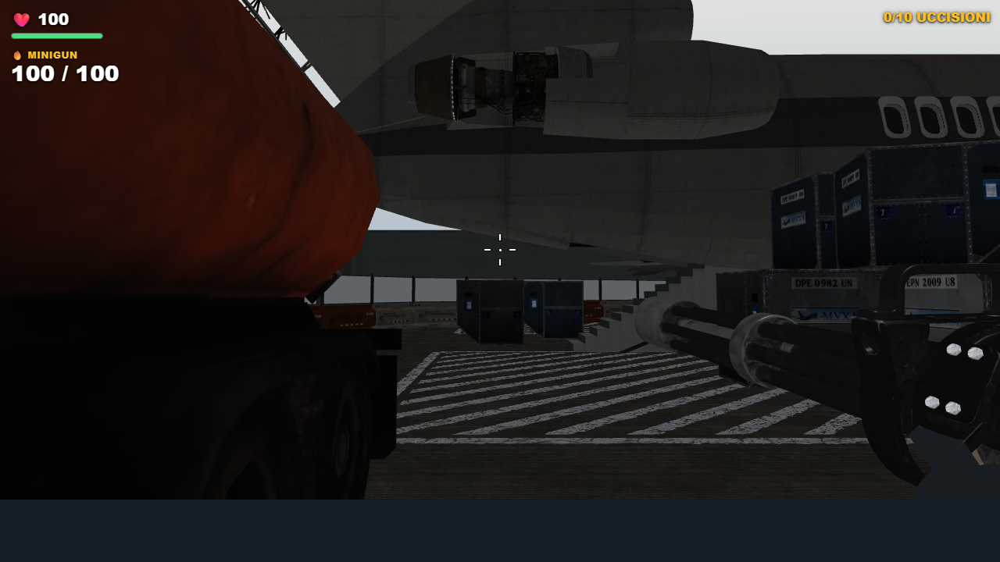

Terminal 2.4
Rifiniture mirate e minigun potenziata: 12 danni, meno dispersione, portata 42 m, ricarica 2,9 s.
Cinque visuali, RTX 3050, 1280×720: 59,6 → 59,5 FPS. Prestazioni sostanzialmente invariate; campione breve con posizioni fisse.

Cabina: cavi, porte e pannelli corretti; minigun con riempimento dedicato.
Vetri originali meno verdi e meno opachi. Coperture e collisioni conservate.
Perimetro metallico neutro e cielo sfumato.Sei armi, sola Ray Gun rossa; ADS 4× conservato. La conversione originale resta parziale.
Note e verifiche